Transforme uma imagem + mapa de altura em um relevo 3D pronto para imprimir
Moedas, medalhas, placas, azulejos, recortes — e agora também sobre objetos 3D como copos, canecas e vasos. Exportação em alta definição, fechada (watertight), para STL, 3MF, OBJ, GLB e mais.
Versão estável 1.1.0 · Windows e Linux · Gratuito e de código aberto (GPL-3.0)
Clique com o botão direito no zip → Extrair tudo… e escolha uma pasta (não execute de dentro do zip).
Abra a pasta extraída e dê dois cliques em Nimcale.exe.
O programa ainda não é assinado digitalmente. Se o Windows SmartScreen avisar, clique em Mais informações → Executar assim mesmo.
🐧Linux (x86_64)
Distribuições com glibc 2.35 ou mais nova (Ubuntu 22.04+, Linux Mint 21+, Debian 12+, Fedora 36+, Arch…), OpenGL 3.3 (Mesa ou driver NVIDIA/AMD/Intel), X11 ou Wayland (via XWayland).
O AppImage precisa do FUSE 2. Se aparecer “error loading libfuse.so.2”, instale libfuse2 (Ubuntu 24.04+: libfuse2t64) ou execute com --appimage-extract-and-run.
tar.gz
tar -xzf Nimcale-1.1.0-linux-x86_64.tar.gz
cd Nimcale-1.1.0-linux-x86_64
chmod +x Nimcale
./Nimcale
./install.sh # menu + icon
./install.sh --uninstall
O install.sh é opcional: ele coloca o Nimcale com ícone no menu de aplicativos (só para o seu usuário, sem root). Rode de novo se mudar a pasta de lugar; ./install.sh --uninstall tira do menu.
Faltam bibliotecas do sistema?
A maioria das distribuições com desktop já tem tudo. Se o programa não abrir, instale as bibliotecas OpenGL / X11 (opcionais: zenity para janelas de erro, xdg-utils para abrir links e pastas):
O AppImage do Linux abrindo o vaso de exemplo (Mesa llvmpipe).
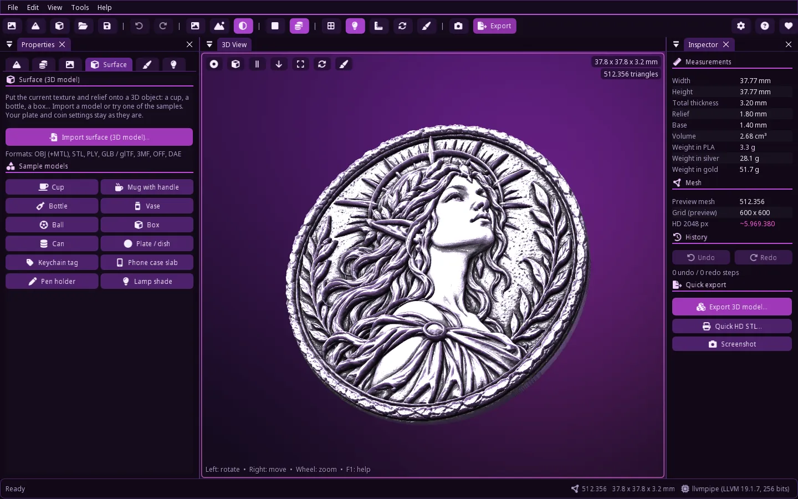
A aba Superfície e os modelos de exemplo, em inglês.
Início rápido (5 passos)
O caminho curto de uma imagem até um arquivo para imprimir:
Abra o Nimcale: a moeda padrão já aparece em 3D, então dá para explorar todos os controles na hora.
Importe a sua textura (imagem colorida) e o mapa de altura (tons de cinza: branco = alto, preto = baixo) com Ctrl+O ou arrastando os dois arquivos para a janela.
Na aba Modelo defina o tamanho real em mm, a profundidade do relevo e a espessura da base.
Na aba Forma escolha placa inteira ou recorte do objeto (círculo, hexágono, contorno do objeto…), com borda e chanfro se quiser.
Aperte Ctrl+E e exporte em alta definição (STL ou 3MF para imprimir). Salve um projeto .nimcale para continuar depois.
A interface
Tudo fica em uma janela com painéis encaixáveis (arraste as abas dos painéis para reorganizar; Tab mostra/oculta os painéis laterais).
Janela principal: propriedades à esquerda, visão 3D no centro, inspetor à direita.
1Barra de menus — Arquivo (importar, projetos, recentes, exportar, superfície, modelos de exemplo), Editar, Exibir, Ferramentas e Ajuda.
2Barra de ferramentas — importar, abrir/salvar, desfazer/refazer, modo de visualização, placa/recorte, wireframe, luz, giro, escultura, captura e Exportar.
3Propriedades — as abas Modelo, Forma, Textura, Superfície, Esculpir e Cena.
4Visão 3D — botões de vista frente/iso/lado/topo, redefinir câmera, giro automático e modo escultura; tamanho e triângulos no canto.
5Inspetor — medidas reais (mm), volume, peso em PLA/prata/ouro, dados da malha, histórico e exportação rápida.
6Barra de status — mensagens, triângulos, dimensões e o renderizador em uso (GPU ou Mesa).
Mouse: arrastar com o esquerdo gira, com o direito/meio move, a roda dá zoom. Segure Shift num controle deslizante para ajuste fino; clique com o direito nele para voltar ao padrão. F1 abre a ajuda.
A moeda padrão
Ao abrir, o Nimcale carrega uma moeda de exemplo (textura + mapa de altura, visualização Mistura, recorte redondo). É um lugar seguro para testar: mude o que quiser, e R (Redefinir tudo) ou Ctrl+Z trazem tudo de volta.
Usando sua própria textura e relevo
O Nimcale trabalha com duas imagens do mesmo desenho: a textura (as cores) e o mapa de altura (o relevo, em tons de cinza). Aceita PNG, JPG, WebP, BMP, TIFF, TGA, GIF e EXR.
Aba Modelo → Arquivos → Importar textura + mapa de altura… (Ctrl+O), ou importe cada um separado (Ctrl+T / Ctrl+M). Clique numa miniatura para trocar aquela imagem.
Ou simplesmente arraste e solte os dois arquivos na janela.
Um mapa de altura novo ajusta o contorno ao seu objeto sozinho (veja Forma e recorte).
Regra do mapa de altura: branco = alto, preto = baixo. Se o relevo sair invertido, marque Inverter relevo.
Modos de visualização: textura, altura e mistura
Na aba Textura (ou com T) alterne a visão 3D entre Textura, Altura e Mistura; a Quantidade da mistura combina as duas.
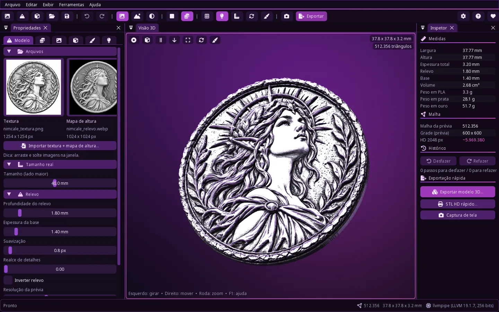
Visualização Textura.
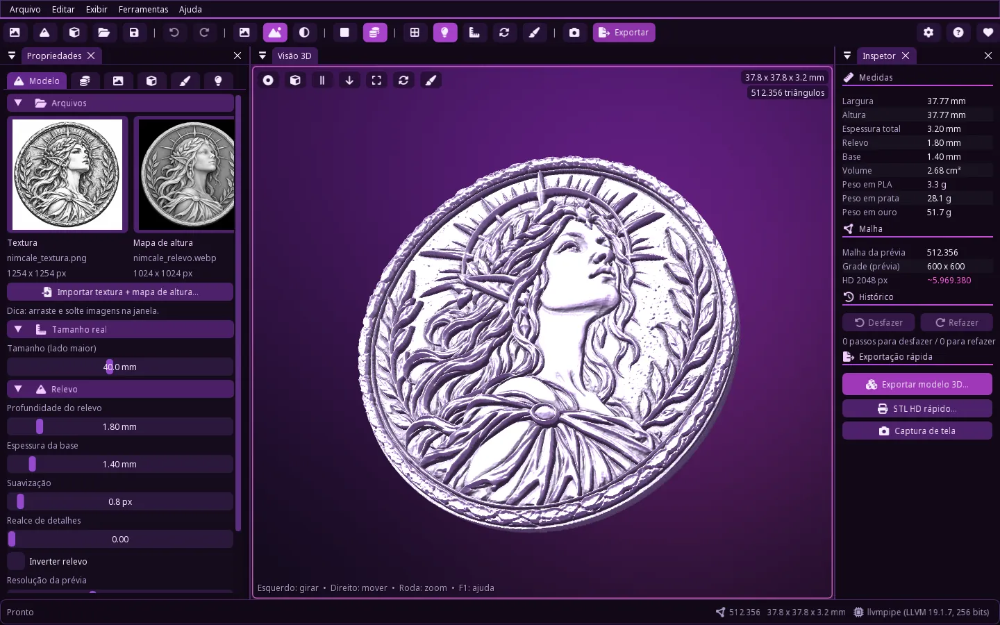
Visualização Altura: só o relevo.
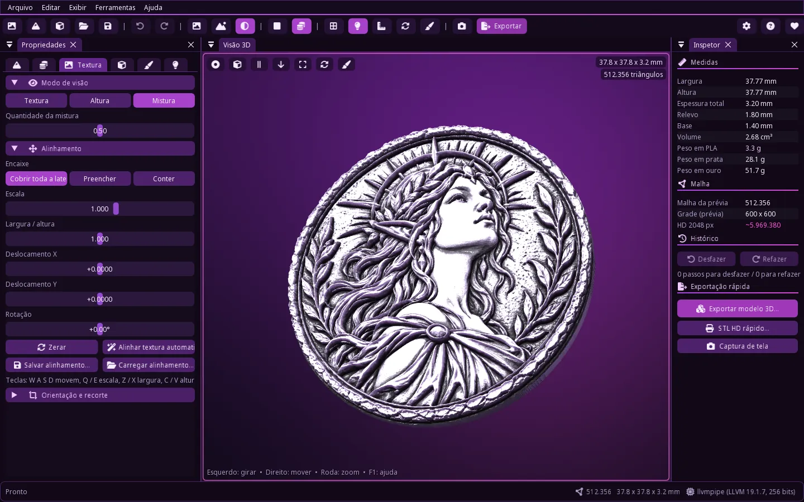
Aba Textura com a visualização Mistura.
Se a textura e o relevo não estiverem alinhados, use Alinhamento: ajuste (esticar / conter / preencher), escala, proporção largura/altura, deslocamento X/Y, rotação ou Alinhar textura automaticamente. Dá para salvar e carregar o alinhamento (G / Ctrl+L). Orientação e recorte espelha e gira as imagens 90° (também no menu Editar) e recorta as bordas.
Controles do relevo (aba Modelo)
Todas as mudanças aparecem na hora na visão 3D.
Tamanho (lado maior) — o tamanho real em milímetros.
Profundidade do relevo e Espessura da base (atalhos +/− e 9/0).
Suavização tira o ruído do mapa de altura; Realce de detalhes (com raio) deixa os detalhes finos mais nítidos.
Inverter relevo troca alto por baixo.
Níveis e curva — brilho, contraste, ponto preto/branco e curva de altura (gama).
Ruído e detalhes — quantidade, escala e semente para um acabamento texturizado.
Resolução da prévia — só a malha da tela; a exportação tem a sua própria qualidade.
Dica: o Inspetor mostra largura, altura, espessura, volume e peso estimado em PLA, prata e ouro enquanto você ajusta.
Forma, recorte e ajuste fino
Na aba Forma escolha entre Placa inteira e Recorte do objeto (B alterna). O contorno pode ser o contorno do objeto, círculo, elipse, retângulo arredondado, hexágono ou octógono, com posição, tamanho e rotação, além de borda (aro de moeda) e chanfro.
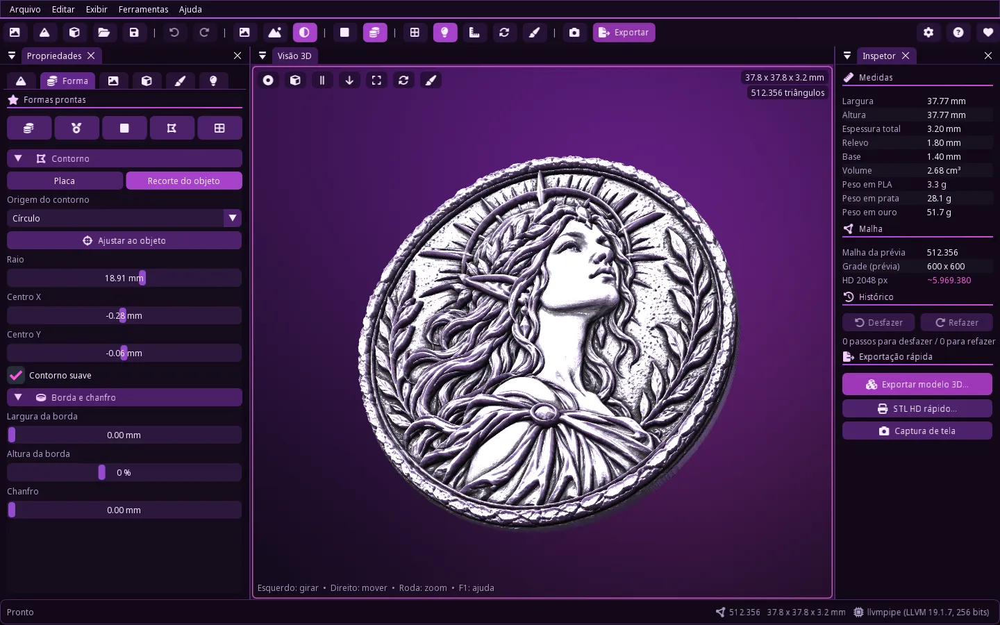
Aba Forma: predefinições, contorno e borda.
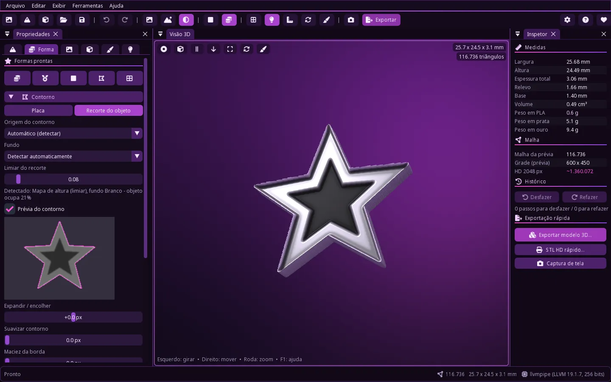
Recorte automático seguindo uma estrela em fundo branco.
Predefinições
Um clique: Moeda, Medalha (aro elevado e chanfro), Placa (retângulo com moldura), Contorno (contorno exato do objeto) e Azulejo (quadrado arredondado).
Recorte automático e ajuste fino
Ao importar uma imagem, o fundo é detectado sozinho: escuro, branco, transparente ou uma cor escolhida (com tolerância).
Origem do contorno: mapa de altura, transparência da textura ou cor da textura.
Limiar do recorte ([/]), Expandir / encolher, Suavizar contorno, Maciez da borda.
Preencher buracos, Remover ilhas pequenas, Manter só o maior objeto.
Prévia do contorno desenha o contorno ao vivo sobre o modelo.
Esculpir e editar
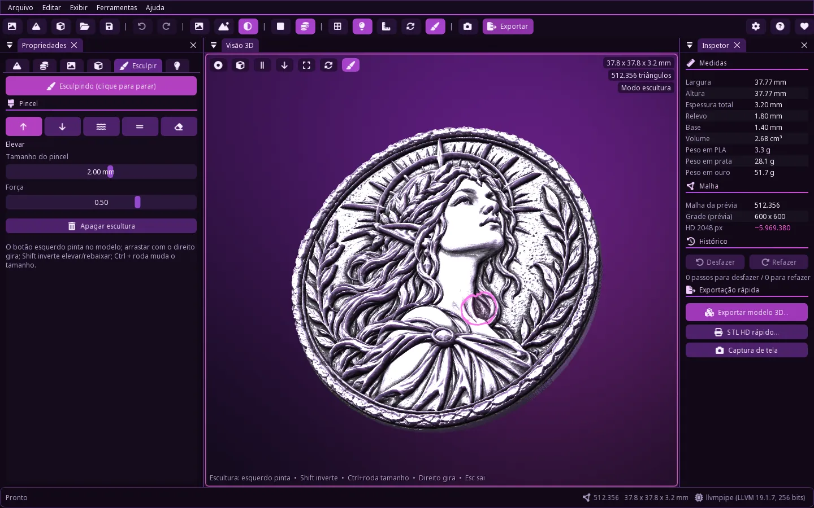
Modo escultura: pinte o relevo direto no modelo.
A aba Esculpir (ou K) deixa você pintar o relevo com o mouse.
Pincéis: Elevar, Rebaixar, Suavizar, Aplanar e Apagar (volta ao relevo original).
Tamanho do pincel e Força; Ctrl+roda muda o tamanho, Shift inverte elevar/rebaixar.
Arrastar com o direito continua girando a câmera; Esc sai do modo escultura; Apagar escultura remove todos os traços.
Tudo pode ser desfeito com Ctrl+Z / Ctrl+Y (a lista do Histórico fica no Inspetor). A escultura funciona na placa/moeda (não sobre uma superfície 3D importada).
Cena, materiais e medidas
A aba Cena muda só a aparência na tela: material (textura, prata, ouro, bronze, cobre, jade, ametista, argila), direção/elevação/intensidade da luz, ambiente, brilho, oclusão de ambiente, fundo (degradê ou cor sólida), grade (10 mm), eixos, cotas, wireframe (F) e giro automático (Espaço).
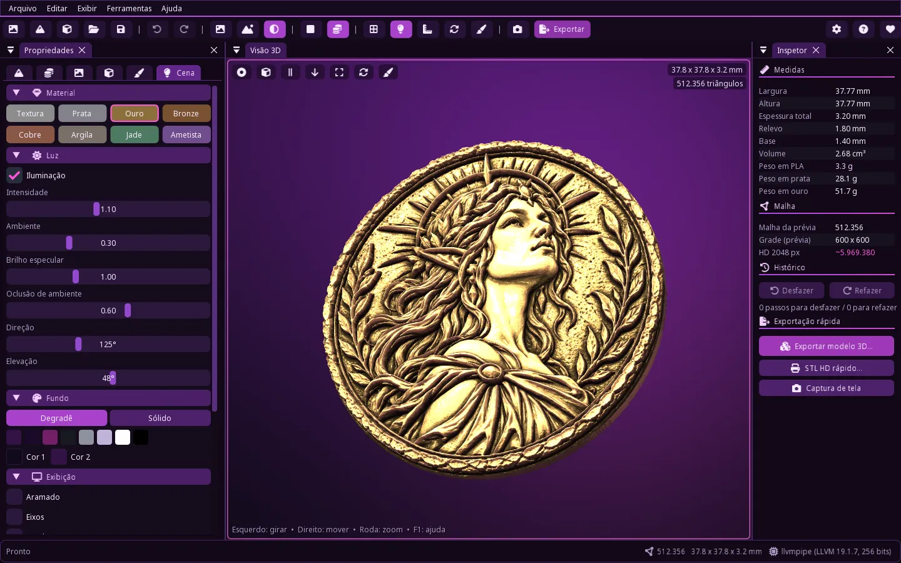
Material ouro na aba Cena.
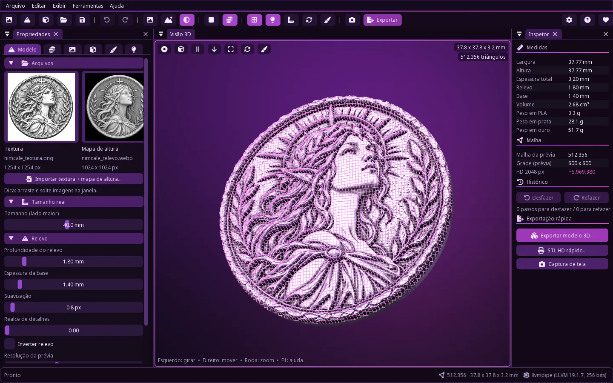
Wireframe ligado: veja os triângulos da malha.
O Inspetor mostra as medidas reais, a malha da prévia, os triângulos estimados em HD, o histórico de desfazer e os botões de exportação rápida (Exportar modelo 3D…, STL HD rápido, Captura de tela).
Superfície: relevo sobre objetos 3DNOVO na 1.1
Além das camadas de textura e relevo, a aba Superfície envolve um objeto 3D com a textura e o relevo atuais — por exemplo, a imagem cobre um copo inteiro — e você pode redimensionar, mover e mudar as proporções para ajustar certinho. Nada foi removido: o Nimcale continua abrindo com a moeda padrão; a superfície é um extra opcional.
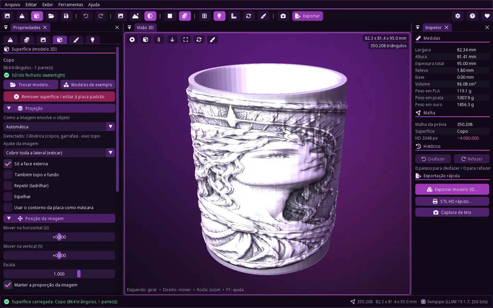
Copo: a imagem dá a volta inteira.
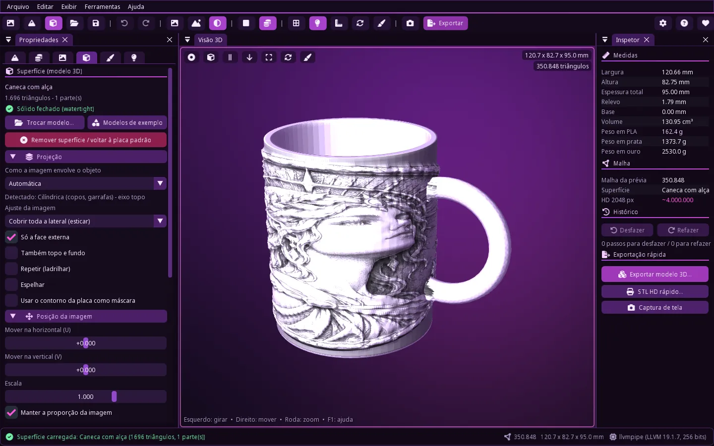
Caneca com alça (a alça fica lisa).
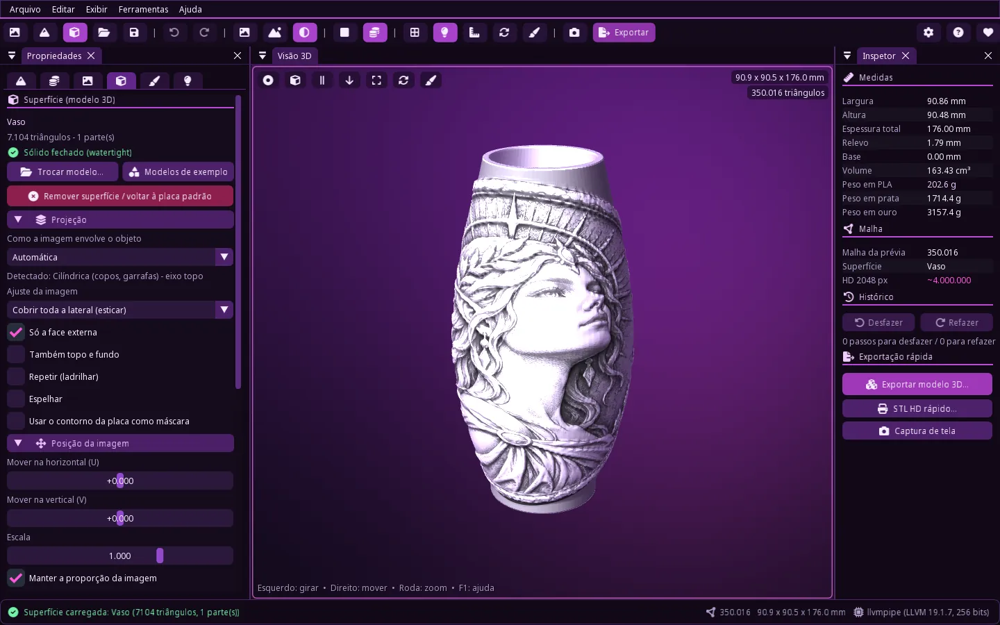
Vaso com projeção cilíndrica automática.
Passo a passo
Abra a aba Superfície e clique em Importar superfície (modelo 3D)… — ou use Arquivo → Importar superfície, Ctrl+Shift+U, ou arraste o arquivo 3D para a janela. Não tem um modelo? Clique em um dos Modelos de exemplo.
A projeção é escolhida sozinha (cilindro para copos e garrafas, esfera, objeto plano ou caixa) e a imagem cobre a lateral inteira. O texto Detectado: … diz o que foi escolhido.
Ajuste a imagem em Posição da imagem: mover, escala, proporção de largura/altura separadas, rotação, posição da emenda — e em Projeção: ajuste, repetir, espelhar, só a face externa.
Defina a altura do relevo (mm) e o detalhe; em Modelo escolha o eixo “para cima”, o tamanho (mm), a rotação X/Y/Z e a cor.
Exporte (Ctrl+E): tudo sai mesclado em um único modelo, também em HD.
Formatos para importar
OBJ (+MTL)STLPLYGLBglTF3MFOFFDAEFBX ✕
OBJ (com o MTL), STL, PLY, GLB / glTF, 3MF, OFF e DAE (Collada). FBX não é suportado — converta para GLB ou OBJ (por exemplo no Blender). Vários objetos no mesmo arquivo são unidos, metros viram milímetros, normais que faltam são calculadas e modelos com mais de 2 milhões de triângulos são simplificados.
12 modelos de exemplo
CopoCaneca com alçaGarrafaVasoBolaCaixaLataPratoChaveiro (tag)Placa tipo capinha de celularPorta-canetasCúpula de luminária
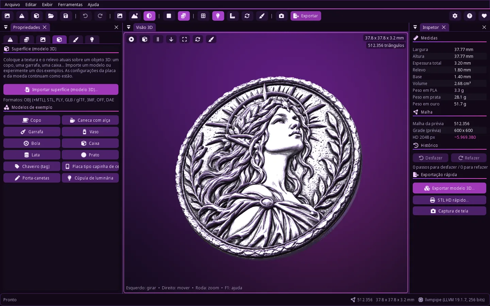
Aba Superfície sem modelo: botão de importar e modelos de exemplo.
Projeções
Automática — detecta cilindro, esfera, objeto plano ou caixa.
UVs do modelo — usa as coordenadas de textura do próprio modelo (se tiver).
Cilíndrica — copos, garrafas, latas (escolha o eixo).
Esférica — bolas.
Plana — projeta de uma direção.
Caixa (triplanar) — cada face de uma caixa.
Adesivo — só as faces voltadas para um lado.
Controles de posicionamento
Ajuste da imagem: cobrir toda a lateral (esticar), dar uma volta (manter proporção) ou altura do objeto (manter proporção).
Mover na horizontal / vertical, Escala, Manter a proporção da imagem ou proporção da largura / altura separadas, Rotação, Posição da emenda e Resetar posição.
Repetir (ladrilhar) ou imagem única, Espelhar, Usar o contorno da placa como máscara.
Cilindros: Só a face externa (deixa lisos o lado de dentro dos copos e as alças) e Também topo e fundo.
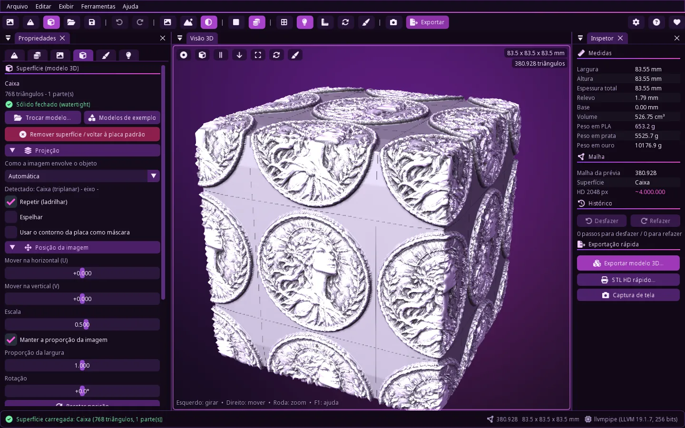
Caixa com a imagem repetida (ladrilhar).
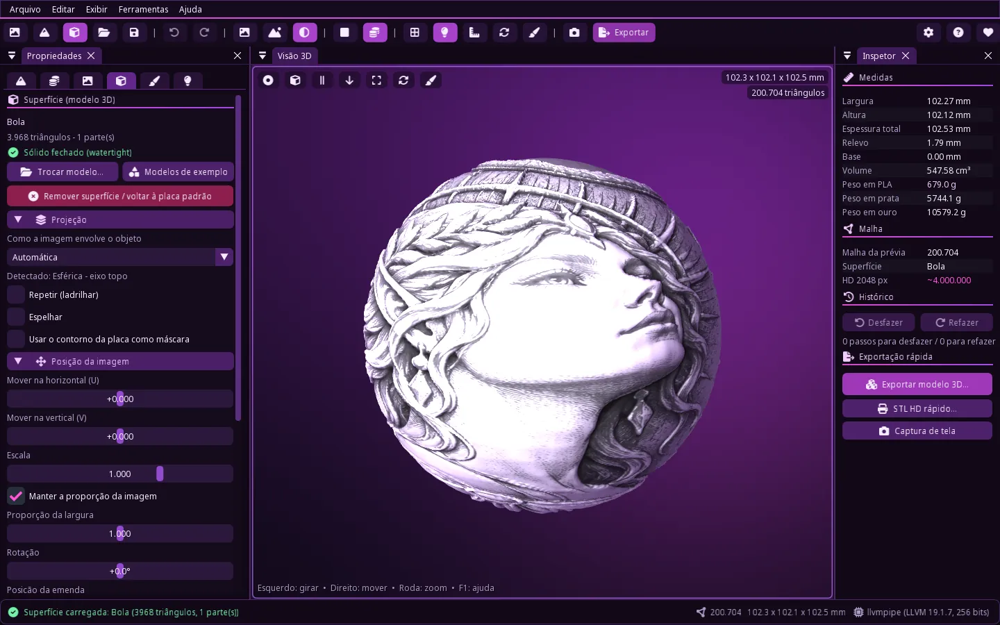
Bola: projeção esférica.
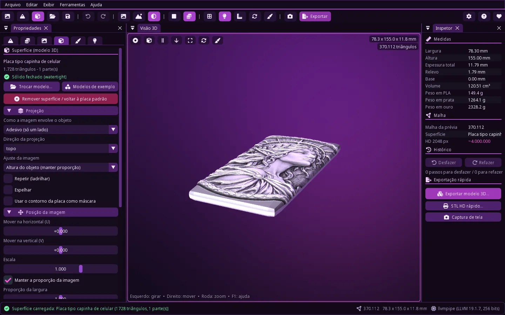
Adesivo numa placa tipo capinha (só um lado).
Relevo na superfície
O relevo desloca a superfície pelas normais, com subdivisão adaptativa (controle Detalhe). Usa a mesma profundidade, inversão e suavização da placa. Um modelo fechado (watertight) continua fechado depois de exportar.
Remover superfície / voltar à placa padrão
Um clique no botão vermelho Remover superfície / voltar à placa padrão (aba Superfície) ou no menu Arquivo volta para a placa/moeda normal. Só o modelo 3D sai — todos os ajustes da placa continuam como estavam — e Ctrl+Z traz a superfície de volta. As superfícies são salvas dentro dos projetos .nimcale.
Limitações: sem FBX; o posicionamento é por controles deslizantes (sem manipulador 3D na tela); a escultura funciona só na placa; OBJ/GLB com textura têm vértices duplicados nas emendas da textura (STL/3MF continuam fechados).
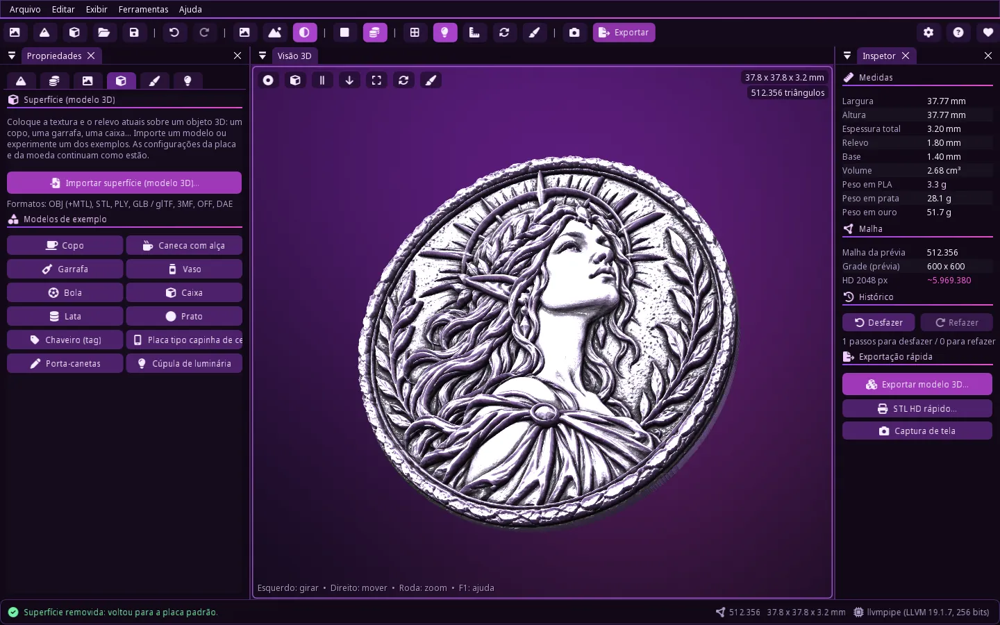
Depois de “Remover superfície”: de volta à moeda padrão, com desfazer disponível.
Exportar
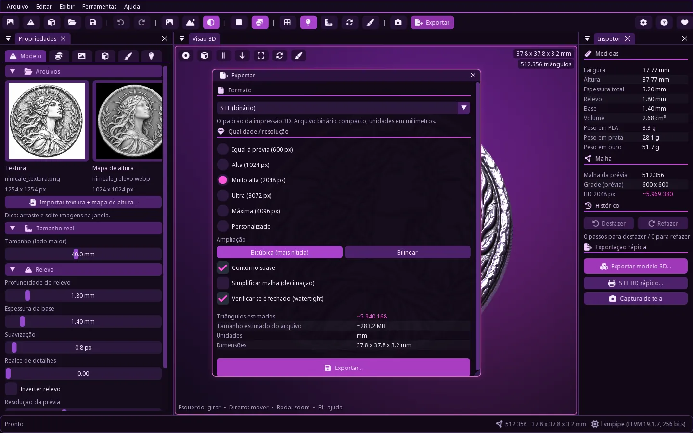
Janela de exportação: formato, qualidade, triângulos e tamanho estimado.
Exportar modelo 3D… (Ctrl+E) abre a janela de exportação: escolha o formato e a qualidade, veja os triângulos e o tamanho estimados, as unidades (milímetros; metros no glTF), verifique se a malha é um sólido fechado e simplifique (decimação) se quiser. O STL HD rápido (Ctrl+Shift+E) salva direto.
Exportação em alta definição
A malha exportada é independente da prévia: de Igual à prévia até Alta, Muito alta, Ultra, Máxima (até 6144 amostras no lado maior) ou Personalizada — milhões de triângulos, com reamostragem bicúbica, barra de progresso e Cancelar. As superfícies também exportam em HD (até 4 milhões de triângulos).
Formato
Para quê
STL
O padrão da impressão 3D (binário, mm); também STL em texto (ASCII).
3MF
Pacote moderno de impressão 3D em mm — PrusaSlicer, Cura, Bambu Studio.
OBJ + MTL + PNG
Formato clássico com UVs, material e textura — abre em quase todo programa 3D.
GLB / glTF
Malha + textura num só arquivo (GLB) ou glTF legível — Blender, visualizadores web.
PLY
PLY binário com cores por vértice — MeshLab, impressão colorida.
OFF
Malha em texto simples para ferramentas de geometria (MeshLab, CGAL).
PNG
Mapa de altura 16 bits, normal map ou a textura “assada” (CNC, laser, jogos).
GIF
Giro animado de 360° da vista atual, para compartilhar.
Capturas de tela: P (ou Ctrl+P “como…”), também em 2× e com fundo transparente. Projetos: Ctrl+S salva um arquivo .nimcale com imagens, ajustes e superfície; Ctrl+Shift+O abre. As exportações vão para Documentos/Nimcale por padrão (dá para mudar nas Configurações).
Temas, aparência e idiomas
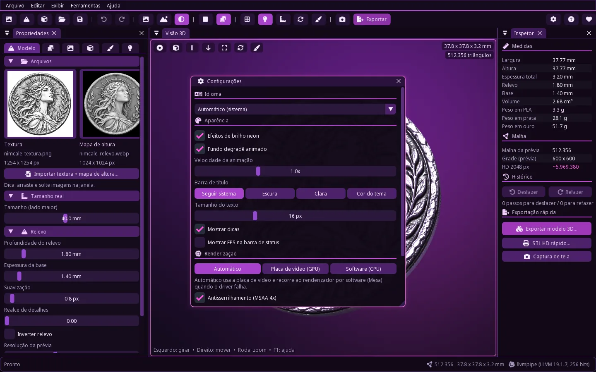
Janela de Configurações (Editar → Configurações, ou o botão de engrenagem).
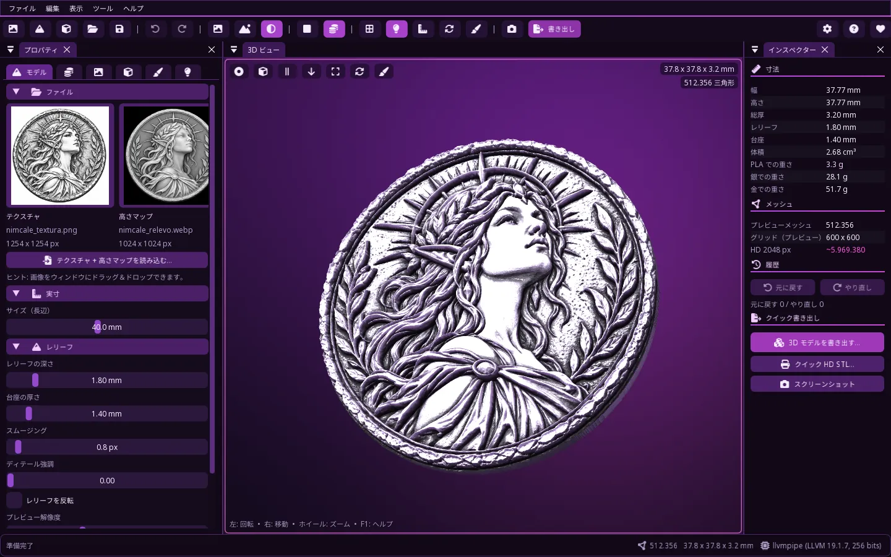
A interface inteira em japonês.
Aparência
Tema roxo/rosa com Efeitos de brilho neon e Fundo degradê animado — os dois podem ser desligados, e a velocidade da animação ajustada. Também: tamanho do texto, dicas (tooltips) e a barra de título (seguir o tema claro/escuro do sistema, escura, clara ou cor do tema).
12 idiomas
Português (Brasil), English, Español, Français, Deutsch, Italiano, Русский, Polski, Türkçe, 简体中文, 日本語 e 한국어. Automático (sistema) usa o idioma do seu sistema (Português se não der para detectar).
Renderização
Renderizador: Automático (placa de vídeo, trocando para o renderizador por software Mesa se o driver falhar), GPU ou Software (CPU). Também antisserrilhado (MSAA 4x), FPS na barra de status e as pastas de saída/configurações.
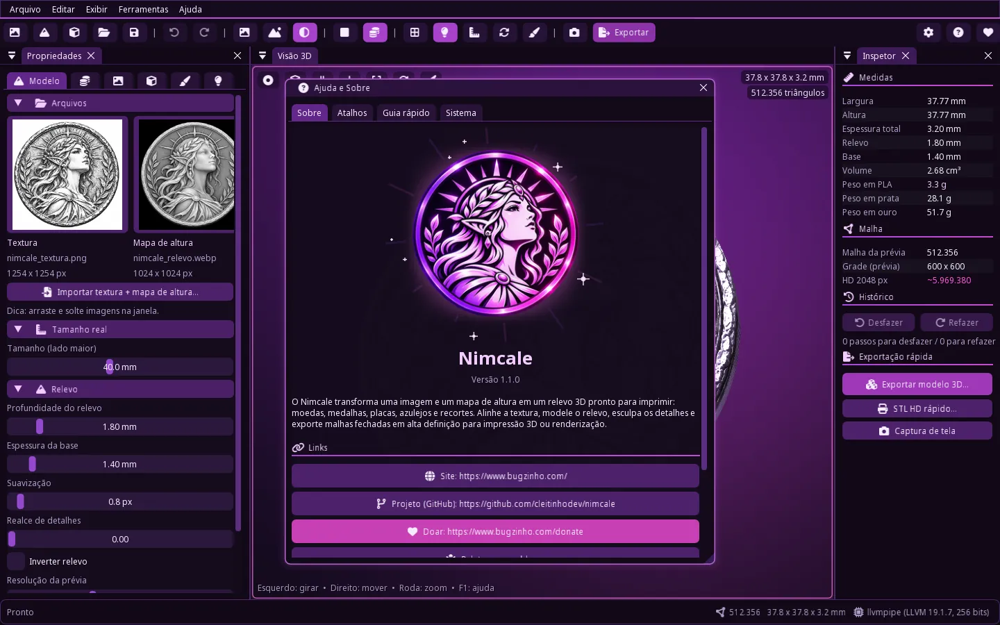
Janela Sobre: versão, links e licenças.
Principais atalhos de teclado
Ctrl+O
importar textura + mapa
Ctrl+T / Ctrl+M
importar textura / mapa de altura
Ctrl+Shift+U
importar superfície (objeto 3D)
Ctrl+S / Ctrl+Shift+O
salvar / abrir projeto
Ctrl+E
janela de exportação
Ctrl+Shift+E
STL HD rápido
Ctrl+Z / Ctrl+Y
desfazer / refazer
Ctrl+Q
sair
T
textura / altura / mistura
B
placa / recorte do objeto
K
modo escultura
F / U
wireframe / iluminação
1234
vistas frente / iso / lado / topo
Space / Ctrl+R
giro automático / redefinir câmera
+ / −
profundidade do relevo
9 / 0
espessura da base
[ / ]
limiar do recorte
, / .
suavização
WASDQ/EZ/XC/V
mover / escalar / girar a textura
←→↑↓
direção / elevação da luz
G / Ctrl+L
salvar / carregar alinhamento
P / Ctrl+P
captura / captura como…
R
redefinir tudo
Tab
mostrar / ocultar painéis
F1 / F11
ajuda / tela cheia
Esc / Shift
fechar janela, sair da escultura / ajuste fino
Dúvidas e solução de problemas
Onde ficam as configurações e o arquivo de log?
Windows: %APPDATA%\Nimcale\nimcale.log (configurações na mesma pasta, config.json). Linux: ~/.config/Nimcale/nimcale.log (ou $XDG_CONFIG_HOME/Nimcale). Configurações → Abrir pasta de configurações abre essa pasta. Ao relatar um problema no GitHub, anexe esse log.
A janela fica preta, o OpenGL falha ou o programa fecha ao abrir
O Nimcale precisa de OpenGL 3.3. Ele testa o driver de vídeo ao abrir e, se o driver falhar (ou se a última abertura travou), troca sozinho para o renderizador por software Mesa llvmpipe — mais lento, mas funciona até em máquinas virtuais sem GPU. Para forçar: Configurações → Renderização → Software (CPU), ou abra com --software (Windows: Nimcale.exe --software; Linux: ./Nimcale --software). --gpu força a placa de vídeo. Atualizar o driver de vídeo costuma resolver problemas de GPU.
O Windows diz “O Windows protegeu o computador”
É o SmartScreen, porque o executável ainda não é assinado. Clique em Mais informações → Executar assim mesmo. Baixe só da página oficial de versões.
O AppImage não abre no Linux
Dê permissão de execução (chmod +x). Se reclamar de libfuse.so.2, instale libfuse2 (ou libfuse2t64 no Ubuntu 24.04+) ou rode ./Nimcale-1.1.0-x86_64.AppImage --appimage-extract-and-run. Outra opção é a versão tar.gz.
O arquivo exportado já está pronto para imprimir em 3D?
Sim: as malhas são sólidos fechados (watertight) — a janela de exportação pode verificar isso. Use STL ou 3MF em milímetros e abra no seu fatiador (PrusaSlicer, Cura, Bambu Studio…).
Meu modelo 3D não importa
Use OBJ, STL, PLY, GLB/glTF, 3MF, OFF ou DAE. FBX não é suportado: exporte do Blender (ou outro programa) como GLB ou OBJ. Modelos muito grandes (mais de 2 milhões de triângulos) são simplificados ao importar.
A exportação HD está lenta ou falta memória
A qualidade máxima pode gerar muitos milhões de triângulos e usar vários GB de RAM. Escolha uma qualidade menor ou ligue a simplificação da malha na janela de exportação; dá para cancelar a qualquer momento.
Baguncei os painéis ou as configurações
Restaurar configurações padrão nas Configurações volta as opções; abra com --reset-layout para esquecer a disposição salva das janelas. No modelo, R redefine tudo e Ctrl+Z desfaz os últimos passos.
O Esc não fecha o programa
De propósito: Esc fecha janelas e sai do modo escultura. Para sair use Ctrl+Q ou Arquivo → Sair.